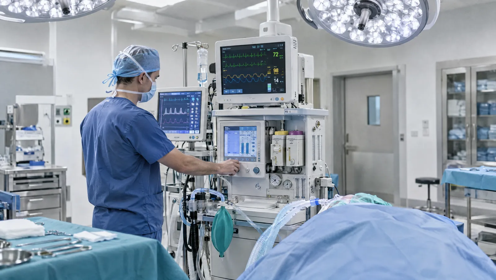

Anestezi uzmanı ameliyat boyunca ne yapar?
Anestezi uzmanı, ameliyat sırasında acı hissetmemenizi ve vücudunuzun dengede kalmasını sağlar. Bunun için size uygun anestezi türünü seçer ve ilaç dozlarını ayarlar. Ameliyat boyunca nefesinizi, kalp ritminizi ve tansiyonunuzu izler. İşlem bittiğinde sizi uyandırır, uyanma odasındaki ilk saatlerinizi yakından takip eder.
Planlı ameliyatlardan birkaç gün önce anestezi uzmanıyla bir ön görüşme yaparsınız. Hekim kronik hastalıklarınızı, ilaçlarınızı, alerjilerinizi ve daha önceki anestezi deneyimlerinizi sorar. Ağız açıklığınıza, boyun hareketinize ve dişlerinize bakar. Gerekirse kan tahlili, EKG ya da akciğer grafisi ister. Anestezi türünü bu görüşmede birlikte konuşur, onam formunu imzalarsınız.
Acil ameliyatlarda bu görüşme, ameliyathaneye girmeden hemen önce kısa bir değerlendirme şeklinde olur. Uzmanlığın reanimasyon kısmı ise kalp durması gibi durumlarda canlandırmayı, zor hava yolunun açılmasını ve solunum cihazı yönetimini kapsar. Bu yüzden anestezi uzmanları acil servis ve yoğun bakım ekipleriyle yakın çalışır.

Anestezi uzmanıyla ne zaman görüşürsünüz?
- Planlı bir ameliyat tarihi aldığınızda, ameliyattan birkaç gün önce
- Kalp, akciğer, böbrek ya da şeker hastalığınız varsa ek değerlendirme için
- Kan sulandırıcı kullanıyorsanız ilacın ameliyat öncesi düzenini planlamak için
- Daha önce anestezide sorun yaşadıysanız ya da ailede böyle bir öykü varsa
- Horlama ya da uyku apnesi tanınız varsa
- Doğumda epidural seçeneğini konuşmak istiyorsanız
- Çocuğunuza tomografi gibi bir işlem için sedasyon planlanıyorsa
Acil durumda beklemeyin
Ameliyattan sonra evde ani nefes darlığı, göğüs ağrısı, bir bacakta ağrılı şişlik ya da bilinç bulanıklığı fark ederseniz kontrol gününü beklemeyin. 112'yi arayın ya da acil servisimize gelin.
Anestezi planını değiştiren sağlık durumları
- Yüksek tansiyon
- Koroner kalp hastalığı ve kalp yetmezliği
- Astım ve KOAH
- Şeker hastalığı
- Uyku apnesi
- Kan sulandırıcı ilaç kullanımı
- Böbrek ve karaciğer hastalıkları
- Belirgin fazla kilo
- Gebelik
- İleri yaş
- İlaç ve lateks alerjisi
- Önceki anestezide bulantı ya da geç uyanma
Anestezi türleri ve ağrı yönetimi
Genel anestezi
Damar yolundan ya da maskeden verilen ilaçlarla tamamen uyursunuz. Nefesiniz gerektiğinde cihazla desteklenir ve ameliyatı hatırlamazsınız.
- Süre
- Ameliyat süresince
- Hazırlık
- Size bildirilen açlık süresine uyun
Spinal ve epidural anestezi
Belden yapılan bir iğneyle vücudun alt yarısı uyuşturulur. Uyanık kalırsınız ya da hafif uyku verilir. Sezaryen, diz ve kalça ameliyatlarında sık kullanılır.
- Hazırlık
- Kan sulandırıcı kullanıyorsanız önceden bildirin
Sinir bloğu
Yalnız ameliyat edilecek kol ya da bacağın sinirleri uyuşturulur. Ultrason eşliğinde yapılır ve ameliyattan sonraki saatlerde de ağrıyı azaltır.
Sedasyon
Damar yolundan verilen ilaçla sakin, yarı uykulu bir hâle geçersiniz. Kendi kendinize nefes alırsınız. Kısa girişimlerde ve kaygıyı azaltmak için tercih edilir.
- Hazırlık
- İşlem günü araç kullanmayın
Ameliyat sonrası ağrı kontrolü
Ağrınız 0-10 arası bir ölçekle düzenli sorulur. Damar yolundan ilaç, sinir bloğu ya da düğmesine basarak kendi dozunuzu aldığınız ağrı pompası kullanılabilir.
Ameliyat sabahına kadar dikkat edecekleriniz
- Katı yiyecekleri ameliyattan genellikle 6 saat önce bırakın; size farklı bir süre söylendiyse ona uyun
- Su gibi berrak sıvılar çoğu zaman 2 saat öncesine kadar serbesttir; saati ekibinizle netleştirin
- Ameliyat sabahı sakız çiğnemeyin ve sigara içmeyin
- Hangi ilaçlarınızı ameliyat sabahı alacağınızı anestezi uzmanına sorun
- Takma diş, lens, takı ve ojeyi ameliyattan önce çıkarın
- Günübirlik işlemlerde sizi eve götürecek bir yetişkin ayarlayın
Anestezi ve Reanimasyon hekimleri

Narkoz ve uyanma hakkında aklınıza takılanlar
Ameliyat sabahı düzenli ilaçlarımı almalı mıyım?
Bazı ilaçlar ameliyat sabahı az suyla alınır, bazılarına ise bir gün önce ara verilir. Hangisinin hangi gruba girdiğine anestezi uzmanınız ön görüşmede karar verir. Kendi kendinize ilaç atlamayın ya da eklemeyin.
Genel anestezide uyanamama riski var mı?
Sağlıklı kişilerde ciddi anestezi sorunları seyrektir. Risk yaşa, kalp ve akciğer hastalıklarına ve ameliyatın büyüklüğüne göre değişir. Ön görüşmede size özel riskleri açıkça sorabilirsiniz. Ameliyat boyunca anestezi ekibi sizi sürekli izler; ilaçlar kesildiğinde uyanma genellikle dakikalar içinde başlar.
Belden uyuşturmada ameliyatı duyar mıyım?
Uyanık kalabilirsiniz ama ameliyat bölgesinde ağrı duymamanız amaçlanır. Dokunma ya da çekilme hissi olabilir. Ameliyathanedeki sesleri duymak istemiyorsanız hafif sedasyon seçeneğini ön görüşmede konuşabilirsiniz. Bacaklarınızdaki his, ameliyattan sonra birkaç saat içinde geri gelir.
Narkozdan sonra neden bulantı olur?
Anestezi ilaçları, ameliyatın türü ve kişisel yatkınlık bulantıya yol açabilir. Daha önce bulantı yaşadıysanız bunu ön görüşmede söyleyin; ekip önleyici tedaviyi buna göre planlar. Ameliyattan sonraki ilk yudumları küçük tutmak da mideyi rahatlatır.
Ameliyattan sonra ağrım çok olursa ne yapmalıyım?
Ağrıyı katlanmanız gereken bir şey olarak görmeyin. Hemşire ağrınızı 0-10 arasında puanlamanızı istediğinde gerçek düzeyi söyleyin. Tedavi bu puana göre ayarlanır. İyi kontrol edilen ağrı, erken yürümenizi ve derin nefes almanızı kolaylaştırır. Böylece akciğer enfeksiyonu ve pıhtı gibi sorunların riski azalır. Evde ağrınız artarsa hekiminize haber verin.
Bu sayfayı Uzm. Dr. Ozan Kılınç gözden geçirdi. Son güncelleme: 7 Ekim 2026.